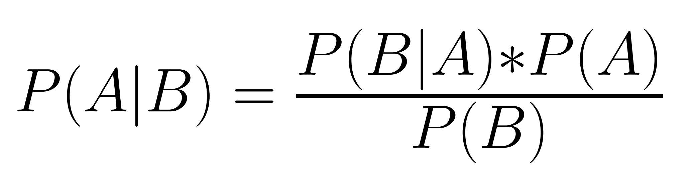

CSCI 5612 Machine Learning for Data Science:
Regional Climate Factor Analysis:
Naive Bayes
Overview
Naive Bayes is a statistical method that can provide probabilities about events by making use of other, known probabilities. The critical basis of this method is Bayes' Theorem, which states that the posterior (desired) probability is equal to the likelihood multiplied by the prior probability and divided by the total probability. This relationship is shown below in the typical formulation.

There are three common types of Naive Bayes used:
• Multinomial Naive Bayes uses discrete features, such as value counts, to produce probabilities.
A common example usage is in spam detection methods.
• Bernoulli Naive Bayes uses boolean features to achieve a similar outcome.
• Gaussian Naive Bayes uses continuous features in conjunction with the normal distribution, but generally functions differently from the other two methods.
An important aspect of Naive Bayes is the "naive" assumption:
This method works only if the features used in it are independent of each other.
Highly-correlated features will disrupt the functioning of the algorithm and can lead to heavily skewed results.
Data Preparation
This operation makes use of a slightly updated dataset from that used in the unsupervised methods.
The dataset has an additional column (the "target variable") that lists the ND-GAIN Index for each country.
This is a score of each country's vulnerability and readiness for climate change effects, developed by the Notre Dame Global Adaptation Initiative using their own methods.
In order for these scores to be usable for classification, they are instead encoded as follows:
• A score between 60-100 means "low" risk
• A score between 40-60 means "normal" risk
• A score between 0-40 means "high" risk
The record of scores for 2022 were incomplete, meaning the number of countries in the current dataset is reduced from 220 to 187.
The new data was sourced from here:
https://gain.nd.edu/our-work/country-index/
In this instance there are few concerns about the correlation of data. Of course, high or low emissions of all pollutants is likely to be observed in some countries. However, due to differences between each country it is common that some pollutants will be emitted more while others will be emitted less. This means that there is no prominent pattern that should be removed to meet the naive independence assumption required for Naive Bayes.

In addition to the labeled data, supervised learning requires datasets to be split into training and testing sets. Doing so enables a model to be trained on one and have it accuracy be tested on the other. If the splits were not created, there would be no reliable method to determine how accurate the trained model really is.
Code Implementation
The code used to perform Naive Bayes can be found in this file:
https://github.com/Machoo/Regional_Climate_Factor_Analysis/blob/main/naive_bayes.ipynb
Results
The completed multinomial Naive Bayes classification model performs well, with an accuracy score of 82%, a recall score of 82%, and an F1 score of 81%. These metrics indicate that the model is acceptable.

The value 1 corresponds to "low", 2 to "normal", and 0 to "high".
The confusion matrix is unfortunately limited by the number of samples in the test set. This number is itself limited due to the entries in the original dataset being individual countries, which leads to a rather small dataset. If the original time series formats of the datasets could be utilized, this problem could be resolved. However, the confusion matrix supports the scores above in showing that the model performs well in its classifications.
Conclusion
The Naive Bayes method appears to be a successful tool to determine whether a country is in danger or particularly safe from climate change according to the ND-GAIN Index. Each of the scores above returning above 80% indicates that the model is successful and likely not over-fitted to the data. The confusion matrix shows that predictions about a country having a "normal" Index are the least accurate, but these predictions are still reliable overall.
Furthermore, this model also shows that the environmental factors dataset is applicable to the ND-GAIN Index. Generally, the Index is also based on these sorts of factors, but this dataset comprises a wider and different array of variables. This broader selection has resulted in a simply-trained model that can create these general Index classifications quickly and accurately.